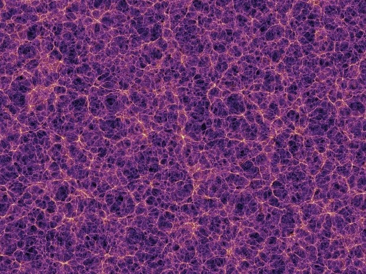
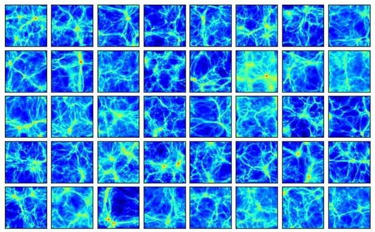

ဒီတော့ စကြာဝဠာ တစ်ခု ဖြစ်တည်လာ ပုံကို အသေးစိတ် စောင့်ကြည့် လေ့လာဖို့ ဆိုတာက ဘယ်လိုမှ မဖြစ်နိုင် ပါဘူး။ ဒါကြောင့်မို့ နက္ခတ် ပညာရှင် တွေဟာ စကြာဝဠာ တစ်ခု ဖြစ်တည်လာ ပုံကို မျက်မြင် လေ့လာ ချင်တယ် ဆိုရင် ကွန်ပြူတာနဲ့ စကြာဝဠာ ပုံတူကို simulation လုပ်ပြီး ဖန်တီးယူ ကြရပါတယ်။
ဒါပေမယ့် ဒီလို စကြာဝဠာ အတု ဖန်တီးဖို ဆိုတာက ထင်သလောက်တော့ မလွယ်ကူပါဘူး။ ဒီ Simulation အတွက် တွက်ချက်မှုပေါင်းများစွာ လိုအပ်တာမို့ သာမန် အိမ်သုံး ကွန်ပြူတာ တွေနဲ့ ဖန်တီးဖို့ ဆိုတာ ဘယ်လိုမှ မဖြစ်နိုင်ပါဘူး။
ဒါ့ကြောင့် နက္ခတ် ပညာရှင် တွေဟာ စကြာဝဠာ အတု ဖန်တီးဖို့ အလွန် အားကောင်းတဲ့ ဆူပါကွန်ပြူတာ ကြီးတွေကို အသုံး ပြုပြီး နာရီပေါင်း များစွာ ဖန်တီးယူကြရတာ ဖြစ်ပါတယ်။

ဒီလို Simulate လုပ်တဲ့ အခါ ဒီလို ရူပဗေဒ နဲ့ ဓါတုဗေဒ ဖြစ်စဉ်တွေ၊ အချက်အလက်တွေ ပါဝင်အောင် ကွန်ပြူတာ ပရိုဂရမ်ကို အသေးစိတ် ရေးကြရ ပါတယ်။ ဒါ့အပြင် ဒီ ပရိုဂရမ် ကို မောင်းနှင်ဖို့ အင်အား အလွန်ကောင်းတဲ့ ဆူပါကွန်ပြူတာ ကြီးတွေလဲ လိုအပ်ပါတယ်။
ဥပမာ ပြရရင် CAMELS (Cosmology and Astrophysics with MachinE Learning Simulations) စီမံကိန်းမှာ အလွန် အားကောင်းတဲ့ ဆူပါ ကွန်ပြူတာကြီးကို သုံးပြီး စကြာဝဠာ အတုပေါင်း ၄,၂၃၃ ခုတောင် ဖန်တီး ယူခဲ့ ကြပါတယ်။
ဒီလို ဖန်တီးယူတဲ့ စကြာဝဠာ အတုတိုင်းဟာ တစ်ခုနဲ့ တစ်ခု ထပ်တူညီမှု မရှိကြပါဘူး။

ဥပမာ ပြရရင် ခေတ်ဦး စကြာဝဠာ ရဲ့ ပြန့်ကားတဲ့ နှုန်းကို အနည်းငယ် ပြောင်းလိုက်ရုံနဲ့ ထွက်လာတဲ့ စကြာဝဠာ ရဲ့ အသွင်သဏ္ဍာန် ကလဲ ကွဲပြားသွားပါတယ်။
ဒီ စကြာဝဠာ အတု ပြုလုပ်မှုမှာ အချို့ အတုဖန်တီး မှုတွေက dark matter ခေါ် အမှောင်ဒြပ်ရဲ့ သက်ရောက်မှုကို အဓိကထား လေ့လာ ကြပါတယ်။ အချို့ စကြာဝဠာ ဖန်တီးမှု တွေမှာတော့ ကြယ်တွေ နဲ့ ဓါတ်ငွေ့တိမ်တိုက် တွေထဲမှာ ဖြစ်နေတဲ့ ဓါတု ဖြစ်စဉ် တွေကို အသေးစိတ် လေ့လာ ကြပါတယ်။
ဒီလိုမျိုး ကွာခြားချက်တွေ ကြောင့်လဲ ရလာတဲ့ စကြာဝဠာ အတု ၄,၂၃၃ ခုဟာ တစ်ခုနဲ့ တစ်ခု မတူညီ ကြတာ ဖြစ်ပါတယ်။
ဒီလို အတု ပြုလုပ်မှုက ရလာတဲ့ စကြာဝဠာတွေ တစ်ခုနဲ့ တစ်ခု မတူညီဘူး ဆိုရင် ဘာ့ကြောင့် အတု လုပ်နေရ သေးလဲလို့ မေးစရာ ဖြစ်လာပါတယ်။
ဒီလို စကြာဝဠာ အတုတွေ ပြုလုပ် ဖန်တီး ခြင်းအားဖြင့် အခြေခံ ရူပဗေဒ နဲ့ ဓါတုဗေဒ နိယာမ တွေက စကြာဝဠာရဲ့ ဖြစ်စဉ် အပေါ် ဘယ်လို အကျိုးသက်ရောက်မှု ရှိလဲ ဆိုတာကို လက်တွေ့ လေ့လာ နိုင်ပါတယ်။
ဒီ အတုဖန်တီး ထားတဲ့ စကြာဝဠာ တွေနဲ့ ဆိုင်တဲ့ အချက်အလက် တွေနဲ့ ရရှိတဲ့ စကြာဝဠာရဲ့ မြေပုံတွေကို အများပြည်သူ လေ့လာနိုင်အောင် ထုတ်ပြန်သွားမယ်လို့ သိရပါတယ်။
ဒါ့အပြင် နောက်တဆင့် အနေနဲ့ ဒီ အတုပြုလုပ်ထားတဲ့ စကြာဝဠာတွေကို ဉာဏ်ရည်တု AI ကို သင်ကြားပေးတဲ့ နေရာမှာလဲ အသုံးပြုနေ ကြပါတယ်။ ရည်ရွယ်ချက် ကတော့ AI အနေနဲ့ သူ့ကို ထည့်သွင်းပေး လိုက်တဲ့ ရူပဗေဒ နဲ့ ဓါတုဗေဒ သဘာဝ တွေအပေါ် မူတည်ပြီး ဖြစ်လာမယ့် စကြာဝဠာ တွေကို မှန်းဆ ပေးနိုင်ဖို့ ဖြစ်ပါတယ်။
နောက်ပြီး AI ကိုပဲ အသုံးပြုပြီး ဂလက်ဆီ တစ်ခုရဲ့ ပုံပန်းနဲ့ တိုင်းတာရရှိတဲ့ အချက်အလက် တွေကနေ ဒီ ဂလက်ဆီရဲ့ ဒြပ်ထုကို ခန့်မှန်းရာမှာလဲ အသုံးချနိုင်ဖို့ ကြိုးစား နေကြပါတယ်။
ဒီ simulation က ရတဲ့ အချက်အလက်တွေကို ယခုအခါ နက္ခတ် ပညာရှင် တွေက မစ်ကီးဝေး ဂလက်ဆီ နဲ့ ပါတ်သက်လို့ ပိုပြီး သိရှိနားလည်အောင် လေ့လာရာမှာ အသုံးချနေ ကြတယ်လို့ ဆိုပါတယ်။
ဒါ့ကြောင့် နက္ခတ် ပညာရှင်တွေ အတွက် Simulation အတု ဖန်တီး မှုတွေဟာ အလွန် အသုံးဝင်တဲ့ နက္ခတ် လေ့လာရေး နည်းလမ်းတွေ ဖြစ်ကြပါတယ်။
Reference: How astronomers build the Universe in a computer | BBC Sky and Night Magazine